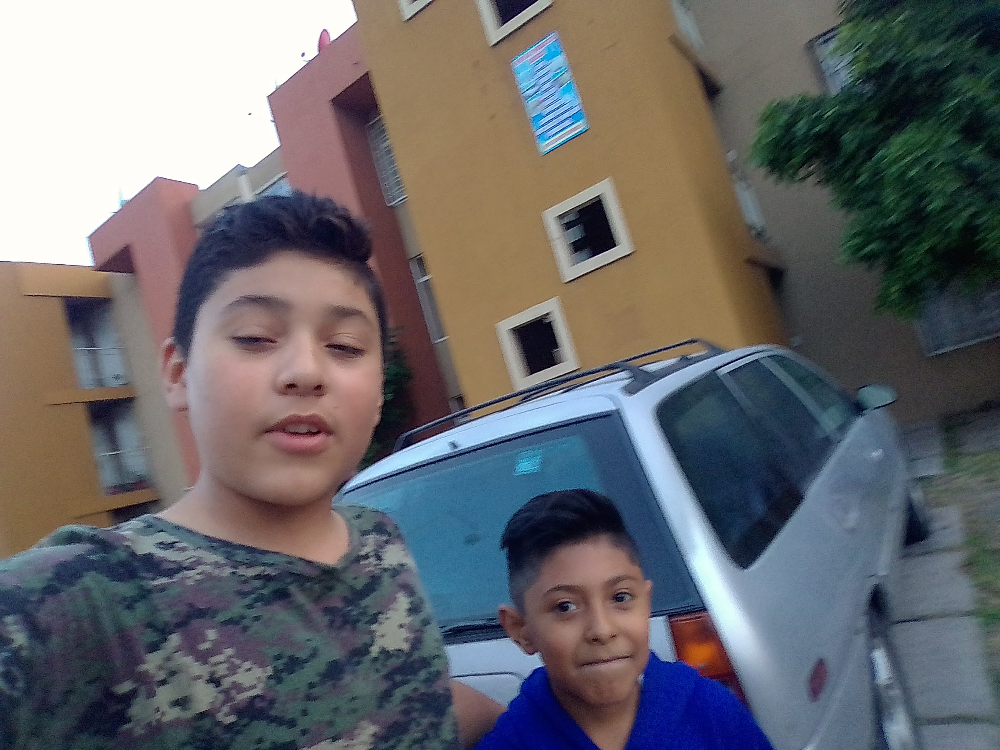

Desde pequeño he tenido una gran curiosidad por la tecnología. Siempre me ha gustado jugar videojuegos, especialmente aquellos que implican estrategia o historia.
Tuve una etapa donde soñaba con ser youtuber. Tenía un canal con dos amigos, grabábamos y editábamos nuestros propios videos. Llegamos a tener 38 suscriptores y fue una experiencia divertida y educativa.
También me gusta escuchar música, sobre todo cuando estoy solo o quiero concentrarme. La música ha sido una especie de refugio para mí en momentos de estrés.
Me apasiona aprender cosas nuevas, desde programación hasta temas curiosos de ciencia o historia. Siempre estoy viendo videos o leyendo artículos que me ayudan a crecer.
Estos pasatiempos no solo me divierten, sino que me motivan a seguir aprendiendo y a imaginar un futuro donde pueda dedicarme a lo que más amo.
